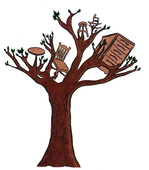

BITS & PIECES
Before the city of Hammond, Indiana, started a clever new strategy for recycling the 400 trees it removed for residents each year, the downed wood was hauled to city landfills and left to rot. But when Lake County Solid Waste Management District Executive Director Jeff Langbehn visited the local Hoosier Sawmill in early 1997, he got to talking with mill operators about a win-win deal for everyone.
Now Hammond, located 33 miles southeast of Chicago, Illinois, has found a way to use these fallen trees--becoming a working template for cities across the nation that are letting valuable resources go to waste.
The old system cost the city in many ways: loss of landfill space, loss of valuable wood, loss of clean air due to methane gas produced by tree decay, and more than $100,000 a year in hauling and dumping fees.
With the new plan, dubbed "Trees to Furniture," the city takes the trees to Hoosier Sawmill to be milled into usable lumber, rather than hauling them to a landfill. The sawmill keeps 70% of the wood for compensation, and the other 30% is transformed into city picnic tables, park benches, garden sheds, and more.
This delights city officials, who used to spend more than S3.000 on picnic tables alone every year.
"This project has taken on a life of its own," says Langbehn. "Everyone I've talked to is really pumped about it. We're taking natural resources that were being thrown away and allowed to decay and turning them into useful products."
Langbehn cites many benefits. Hammond saves thousands of dollars on the dumping of trees, as well as on the building of park fixtures. Less tree decay means less air-polluting methane gas. And Hoosier Sawmill gets a ready source of material at no cost, which it then sells to a local palate company, thereby helping to preserve local jobs.
When portable sawmill manufacturer Wood-Mizer Inc. got a glimpse of Hammond's progressive new plan, they thought it had great potential for the city of Indianapolis. At 1,500,000 people (to Hammond's population of 85,000) the greater metropolitan area of Indianapolis will take a little more organization than the Hammond venture. From public land alone, the city takes down over 3,000 trees a year, most of which end up as firewood or landfill fodder. Still, coordinators hope to have "Trees to Furniture" running in Indianapolis before the end of the summer.
The biggest goal of the Indianapolis project is utilizing different species of wood at the highest practical rates, according to Greg Fennig, executive director of program coordinators for Keep Indianapolis Beautiful (K.I.B.). So, for instance, less marketable species of trees like mulberry and peach might still be cut into firewood, but more valuable hardwoods like cherry, walnut, and oak would be milled for usable lumber. "I like firewood," says Fennig. "But people should realize that if it's a good quality wood, there are many other uses."
Various uses for the new wood supply were imagined at a recent meeting of key project players, hosted by Wood-Mizer, Inc. Besides utilizing it for city construction of park benches, picnic tables, and sawdust to replace salt on city streets, valuable hardwood could be sold to more than 500 furniture makers in the state, donated to vocational schools, to the Boy Scouts for various building projects, or to Habitat for Humanity, a nonprofit low-income housing organization.
Fennig and other K.I.B. organizers believe the program is just innovative enough that they may be able to persuade their well-respected parent organization, Keep America Beautiful, to act as a catalyst in spreading it to cities across the nation.
Says Fennig, "We anticipate that it'll go over really well. It really strengthens the relationship between local governments and private sector folks."
|
 |
|
|